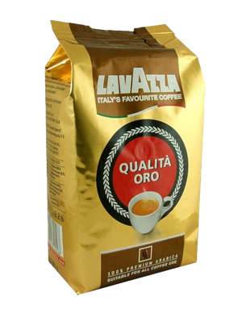

Lavazza Oro зерно 1 кг.
Цена: 900 руб.
Одна из самых популярных смесей Lavazza. Вкус сладковатый, с приятной кислинкой, аромат интенсивный насыщенный, с легким цветочным оттенком, тело напитка плотное.
Зерна из Африки и Центральной Америки.
| Арабика | 100% |
| Рабуста | 0 |
| Обжарка | Средняя |
| Произведено | Италия |
| Вес | 1 кг. |
Lavazza — один из самых популярных брендов в мире, его линейка вкусов — Super Crema, Crema e Aroma, Rossa, Grand Espresso, Bella Crema, Gold Selection, Pieno Aroma — способна удовлетворить самых требовательных кофеманов. Фабрика расположена в Турине, начала обжарку кофе с 1895 года. Кофе в зернах Lavazza сочетает в себе вековые традиции и современные технологии.